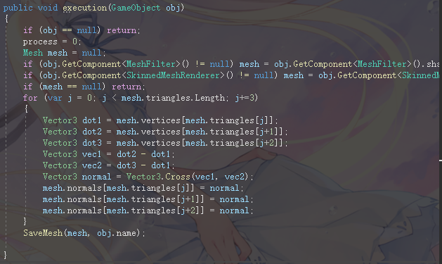
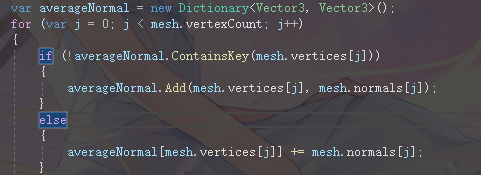
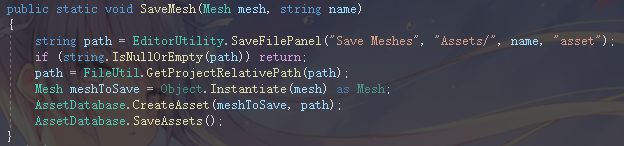
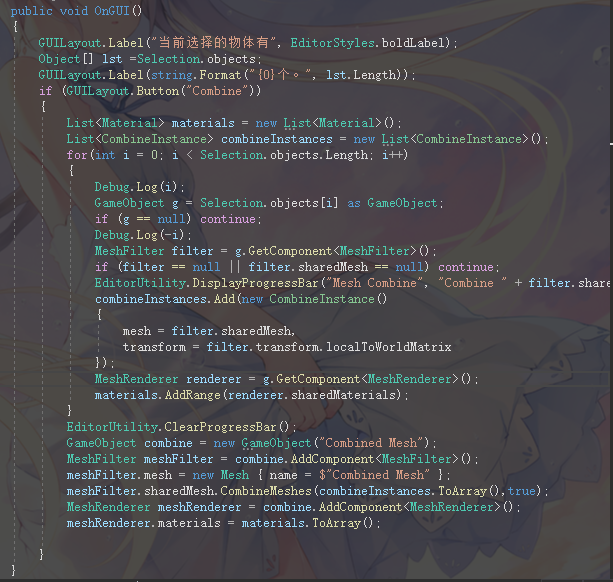
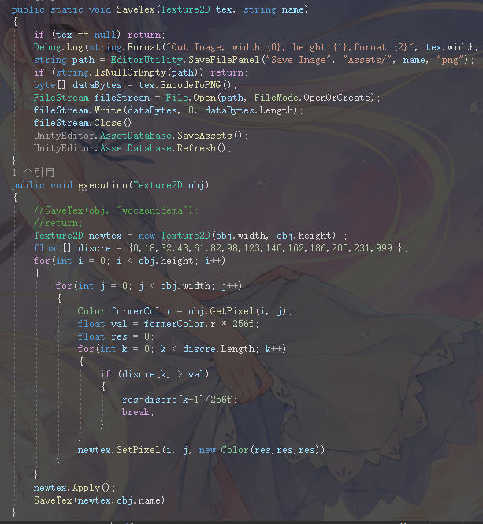
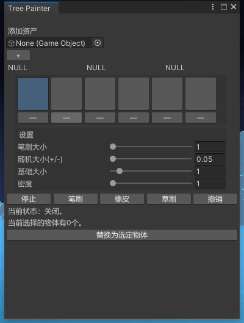
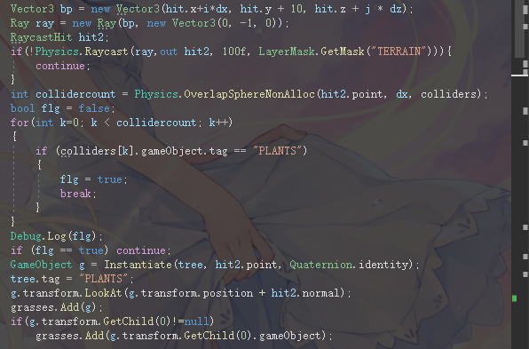
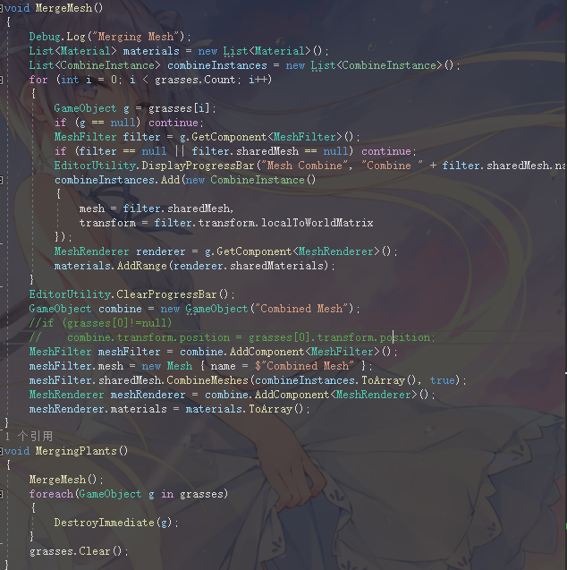

URP轮子合集
Marc 15/span>, 2023
目录
1.模型处理系列-法线平滑/法线重建
2.模型处理系列-模型合并
3.图像处理
4.地形编辑工具-树刷草刷
一些造出来的轮子，是否好用另说，能是能用了。
基础知识是Unity的EditorWindow类和Editor类的使用，有一说一，官网讲了跟没讲差不多，但好在网上有很多资料可以学习。
1.模型处理系列-法线平滑/法线重建
与其说是法线平滑不如说是法线的重建，因为法线的重建实际上只比法线的平滑多一个步骤……首先遍历所有的三角形，根据三角形的三个顶点组成的两个向量进行叉积可以得到一个面的法线（这一步骤仅针对于不自带法线数据或者法线数据错误的模型，还是比较少见的）。然后通过把一个点对应的所有面的法线取均值得到一个顶点的法线，代码非常简单，但是跑起来效率比较低下，面数极大的模型运行速度会很慢。
可以考虑在ComputeShader里跑，或者放到多线程里跑，面数低的话就无所谓了。
 然后进行平滑法线的计算，这个过程同样很慢。
 然后输出生成的Mesh到文件中，新Mesh就是进行过法线处理的模型。

2.模型处理系列-模型合并
模型合并是一个经常需要用到的功能，但如果只是有合并需求的话又用不到MeshBaker这种比较大量级的插件，所以可以考虑自己造一个简单的Mesh合并。UnityEngine中有自带的CombineInstance类可以完成这个功能，用法也比较直观。
照着别人的写了一个。

3.图像处理
如果有opencv，为什么我要用unity来做图像处理呢？主要是记录一下Unity保存图像的方式，示例是将一些图像按照固定的灰度值进行离散化，将模糊的边缘二值化，输出二值化后的结果图像。但实际上由于图像的压缩算法原因，真正的二值化是无法做到的，如果真的有需要用二值化的图像来进行一些非线性运算的话（例如之前的碎屏效果），请使用滤波算法来去噪。

4.地形编辑工具-树刷草刷
树刷主要实现一个在任意物体上通过鼠标划动画线来放置其他物体的功能，严格来讲可以被编辑的不止是地形，那刷的也不止是树。首先，因为是在unity端使用的，这次我们的确会需要一个可以交互的工具窗口UI，基础而言，这个窗口至少要实现如下信息：
①可以选择刷上去的物体；
②可以调整笔刷的参数；
③可以更换手上的工具类型（笔刷、橡皮等）；
UI的编写就是EditorWindow的配置，选择刷上去的物体可以用EditorGUILayout.ObjectField()函数来实现，其余也没有什么可以介绍的。
借鉴了网上的一个UI，在此基础上稍微改了改。
 接下来是实际效果部分，首先，我们希望在当前工具为“笔刷”或“橡皮”的时候，左键拖拽Scene中被刷物体的时候后者不会被移动等默认的左键效果所影响，这部分可以在OnSceneGUI()中使用HandleUtility.AddDefaultControl(GUIUtility.GetControlID(FocusType.Passive));函数来实现，当工具处于笔刷、橡皮等状态时调用此函数，可以使得这一次刷新Scene的时候鼠标失去原本的效果。
然后就是刷树的过程，暂且挂个MeshCollider并依靠射线检测来找到鼠标在地形上的坐标不必多说。我们希望刷出来的树只会出现在被刷的地形上，而不会出现树上加树的情况，因此，在射线中需要使用到LayerMask，先把地形放到一个指定Layer层里，然后再进行检测。
用Event来进行鼠标事件的判断，仅当鼠标左键拖拽的时候会触发刷树效果：
e.type==EventType.MouseDrag&&e.button==0
之后是笔刷方面的实现，笔刷笔刷，刷过的地方那肯定就不会再刷了，毕竟再怎么刷都是同样的颜色。因此制作的第一件事就是判定一下笔刷当前的位置是否已经有树了。那怎么知道位置上是否有树呢？用Physics.OverlapSphereNonAlloc()函数来判定范围内是否有足够的标签为树的物体，根据参数中设定的区域范围内参数中设定的最大容量和当前容量的差值，决定这一笔刷多少树上去。
然后就是生成预制体以及调整方向。大部分的资产在导入unity的时候都会设定Z轴朝上，因此我们只需要让生成的预制体面向光线和地形交点的法线方向即可。别忘了给生成的物体打上树标签。
 橡皮就非常简单，直接删掉范围内标签为树标签的物体即可。
无论是树刷还是草刷，生成的预制体太多显然是不能接受的，尤其是大面积生成的时候以及物体的材质无法合批的时候，一旦预制体占的内存太多unity直接就卡死了。因此我们希望当生成的物体面数太多时自动进行一个合批，这里就要用到之间介绍的Mesh合并工具。在草工具中做个实验，我们希望在鼠标左键松开(Event.MouseUp)时之前刷的草自动合并到一个大Mesh，用同样的原理就能完成。
值得一提的是当面数超过一定数量的时候CombineInstance是无法合并的，因此需要注意一下面数，当然也可以在工具里对超过一定面数的Mesh自动合并。
 代码：链接。